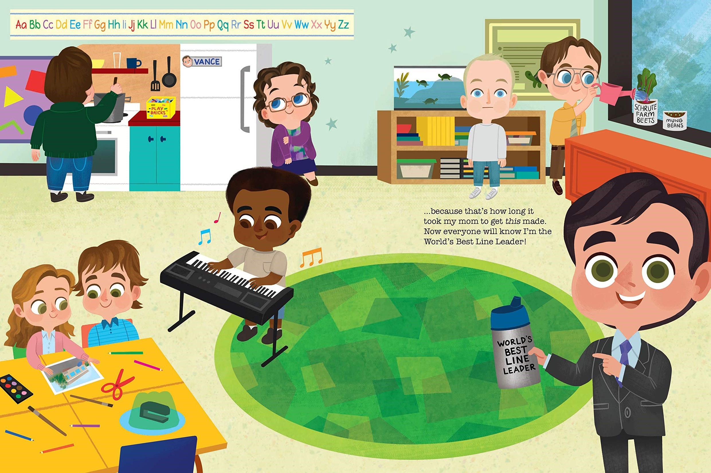
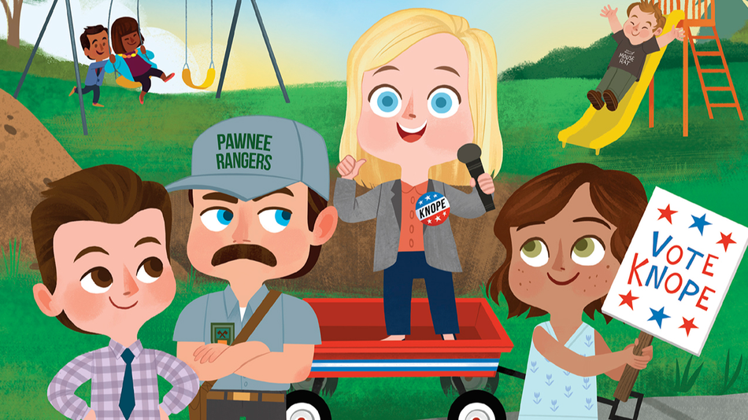

3/10/21 // Tags: Mixed || Parks || Office
Lit-erally the Best Children's Books
From Little, Brown Publishing comes two children's books that imagine The Office and Parks and Rec in cartoon form! With charming illustrations and pint-sized characters, they offer heartwarming lessons and laughter for the younger generations.

While both The Office and Parks and Recreatoion have ended some years ago, these adorable books from Little, Brown Publishing ensures that their legacy can be passed down so the little folks can experience the joy too. Written by Robb Pearlman and illustrated by Melanie Demmer, both books feature easter eggs and hilarious references to iconic moments from the shows that may very well convince you to rewatch the comedies once again, and maybe even bring the little ones with you.
The Office: A Day at Dunder Mifflin Elementary
What might possibly be the cutest book ever, The Office: A Day at Dunder Mifflin Elementary follows Michael Scott, the line leader in Ms. Levinson's class (aka Jan). In his quest to become the "World's Best Line Leader," tiny little Michael must learn the importance of teamwork as he realizes that it's perfectly fine to ask others for help.
Among the many small details (like Phyllis gazing lovingly at a Bob Vance refrigerator) and adorable depictions of the characters (my favorite, by far, is Creed), the book also offers a scavenger hunt with well-placed The Office mementos in the background. There's Kelly's Birthday Mugs, Stanley's Crossword Puzzles, and even the infamous Stapler in Gelatin.
Parks and Recreation: Leslie for Class President
Leslie Knope is running for class president, and she's campaigning in Pawnee Elementry with her friends Ann and Ben (side note: aww tiny Ann is adorable). Like a more wholesome introduction to the dangers of politics on morality, Leslie has to make promises she may not be able to keep and, like her TV counterpart, must learn how to stay true to herself.
Unlike The Office book, which was published in September 2020, Parks and Recreation: Leslie for Class President will be on sale on June 29th, 2021. Until then, you can preorder the book or just watch another episode of the show while you wait. Both are very good options.